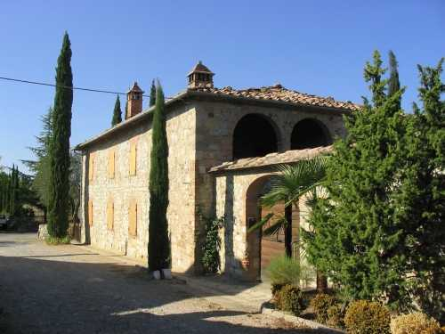

Quercegrossa (Ricordi e memorie)
CAPITOLO I - LUOGHI E PODERI
(CASAGRANDE DI PETROIO)
Cliccami per ritornare all'Indice poderi
Vai all'Indice dei Capitoli

CASAGRANDE DI PETROIO
"Casagrande aveva cinque camere e la cucina grandissima con focolare, terrazza con loggia arcata, un chiostro chiuso con porta esterna, col forno, stalle, stanza delle pecore e la cantina che era il frigorifero di quei tempi". Costruito secondo la logica della mezzadria, il podere di Casagrande è situato davanti al Paradiso di Petroio lungo la strada di Vagliagli, ed era proprietà della fattoria di Mucenni, insieme a Pietralta e Casapera. Considerato da sempre facente parte dell’agglomerato di Petroio, la sua data di costruzione rimane incerta, ma nel 1543 è rammentato in un fascicolo aperto per una causa fra i monaci di Pontignano e la famiglia Cosci. Un secolo dopo, nel 1655, nella registrazione di un funerale, don Berteschi annota "Petroio delle Monache" e nel 1671 nella registrazione di un battesimo appare la notizia "comare Maria di Pavolo Burrini abitante alla Casa Grande, tutti di Petroio". Queste sono le prime citazione del podere di Casagrande possiamo quindi fissare la data di edificazione nei primi decenni del Cinquecento. Dal Seicento la proprietà è delle Monache della Madonna di Siena che la mantengono per tutto il Settecento, e alla soppressione del Convento nel 1808, il podere di Casagrande, come gli altri nella zona, come Larginano ecc., passano a Bruschi Bernardo e poi al genero Galgano Diddi. Trent’anni dopo, Mario Ricci acquista Larginano e Casagrande, ma rivende quest’ultimo il 20 maggio 1872 e compra Lorenzo Cinotti del fu Raimondo che nel 1883 lo cede al figlio Alessandro. I successivi passaggi di proprietà sono identici a quelli di Quetole, ai quali vi rimando. Sede di un solo colono, Casagrande ha visto la famiglia Burrini nel Seicento, poi Petreni, Lazzeri, Pianigiani per 40 anni nell’Ottocento, Semplici 25 anni, Auzzi 25 anni, Masti per 20 anni e infine ultimi coloni, i Morini. Le lunghe permanenze dei contadini testimoniano che trattavasi di un buon podere di circa tredici ettari. I Masti tenevano nella stalla fino a otto bestie: un paio di bovi, uno di vacche e quattro vitelli. Di pecore ne avevano sedici e una scrofa. L’acqua per bere al pozzo del Pallini. Per le bestie al fontone oppure al borro sottostante. Possedevano due carri più quello della botte.
Documento del 1543: ... in comune di petroio a quercia grossa .... chiamata la casa grande
|